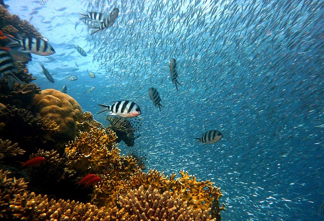
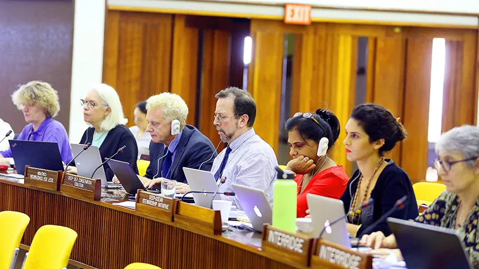
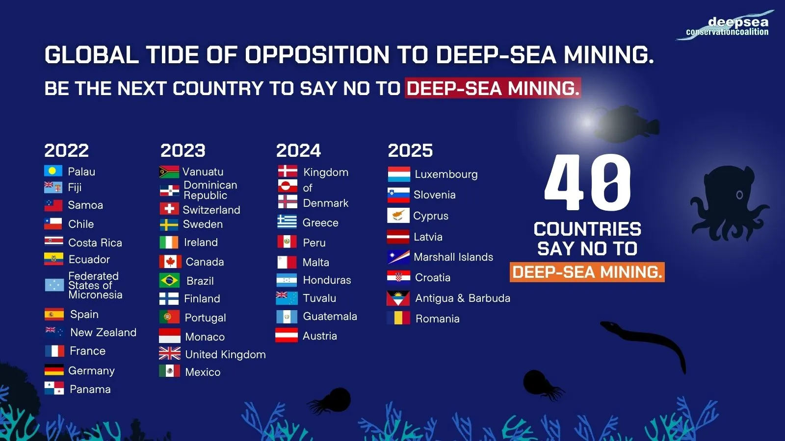
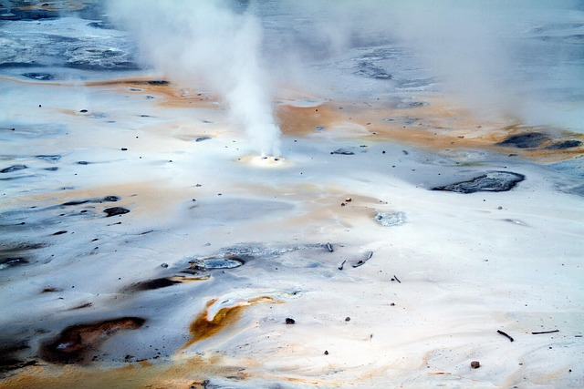
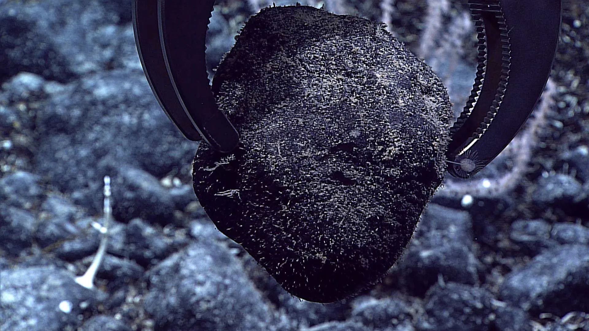

Protect seamounts and VMEs
Seamounts and vulnerable marine ecosystems should be shielded from destructive fishing because they act as biodiversity hotspots in the deep ocean.
Read sectionThe solutions page focuses on what DSCC wants the world to do next: protect seamounts and vulnerable marine ecosystems, pause deep-sea mining, and strengthen ocean governance.

Conservation is not only about stopping damage. It is also about making governance systems strong enough to protect life before it is lost.
The coalition’s solution set follows a practical sequence: defend ecosystems on the seafloor, prevent a mining rush, and improve the rules that shape activity in international waters.

Seamounts and vulnerable marine ecosystems should be shielded from destructive fishing because they act as biodiversity hotspots in the deep ocean.
Read section
The coalition promotes a moratorium until stronger science and governance can prevent irreversible harm to the seabed.
Read section
International rules matter because the deep sea crosses borders. Stronger treaties and institutions make protection enforceable.
Read sectionThis is one of the coalition’s clearest goals. The deep sea is not an open field waiting to be used; it is a living habitat that needs direct protection.

DSCC wants 100% protection of seamounts from destructive fishing in ocean areas beyond national jurisdiction. That means conservation has to be strong enough to stop the worst practices before they flatten these habitats.
Protection is not only about drawing lines on a map. It also means holding states accountable, aligning fisheries management with conservation goals, and keeping vulnerable marine ecosystems visible in global policy.
Expected outcome
When seamounts are protected, the species that rely on them gain a better chance to survive, reproduce, and maintain the biodiversity of the wider deep sea.
A moratorium is a public-interest choice because it avoids locking the world into a damaging system before the ecological and governance questions are settled.
Deep-sea mining is often marketed as a source of critical minerals, but the costs are carried by ecosystems that are difficult to monitor and easy to damage.
The coalition argues that a precautionary pause is the responsible path. It keeps open the option of better science, stronger governance, and more equitable decision-making.
Advocacy goal
DSCC has helped grow support for a moratorium by working with governments, scientists, parliamentarians, and civil society groups around the world.

Do not mine first and ask questions later. Require proof that ecosystems can be protected before approving extraction.
The deep sea should not be treated as a sacrifice zone for short-term industrial demand.
The final solution is structural. Conservation goals only work if international institutions are strong enough to implement them across national boundaries.
DSCC supports the effective implementation of the High Seas Treaty, stronger protections in UN-related ocean discussions, and more consistent rules for activities that affect the deep ocean.
Governance matters because the ocean is shared. If one part of the system is weak, activities in one region can still harm ecosystems elsewhere.
Long-term aim
Put the deep sea into climate and biodiversity governance so that protection is not optional or temporary.
The coalition’s methods connect global coordination, science, visibility, and policy advocacy.
Brings together organizations with different expertise so the message is coordinated and broad-based.
Keeps arguments grounded in evidence so the public debate is credible and hard to dismiss.
Uses communication, imagery, and policy language to make the deep sea easier to understand and easier to protect.
Presses governments and institutions to make decisions that keep the deep ocean healthy over the long term.
Healthy ecosystems show what the deep sea can still look like when protection comes first.